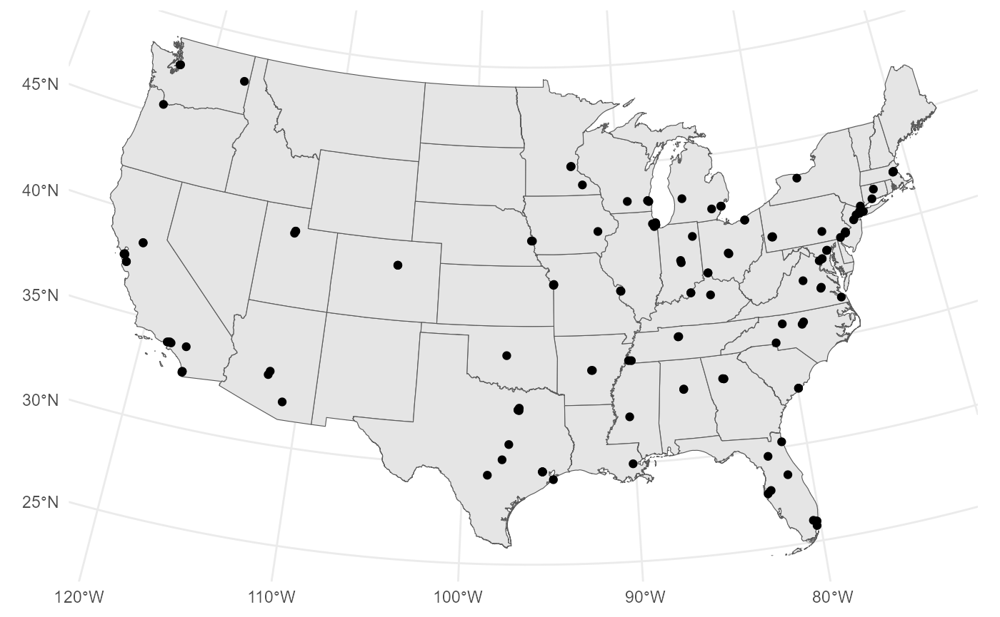
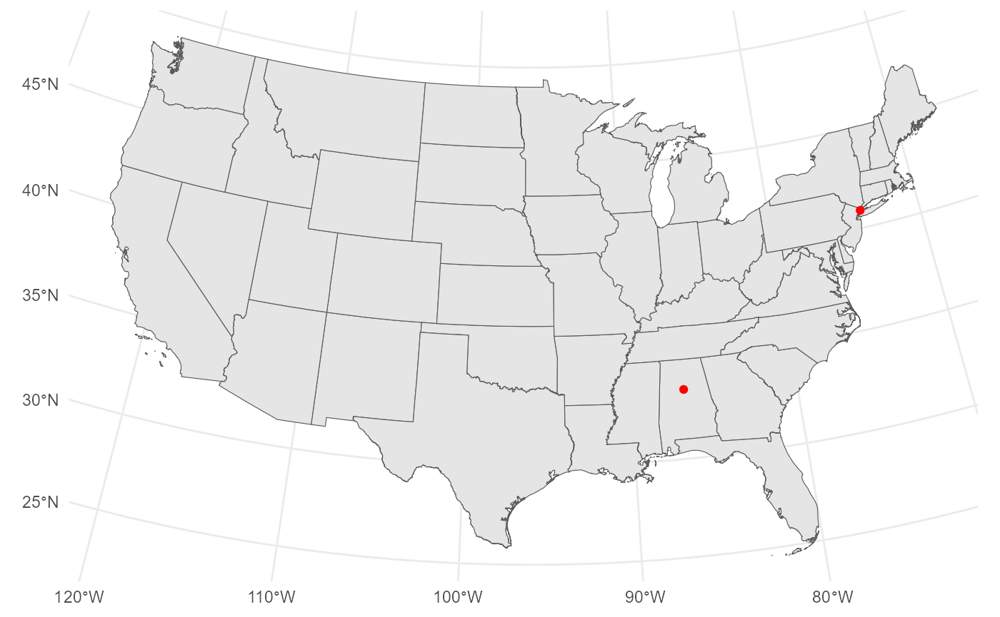
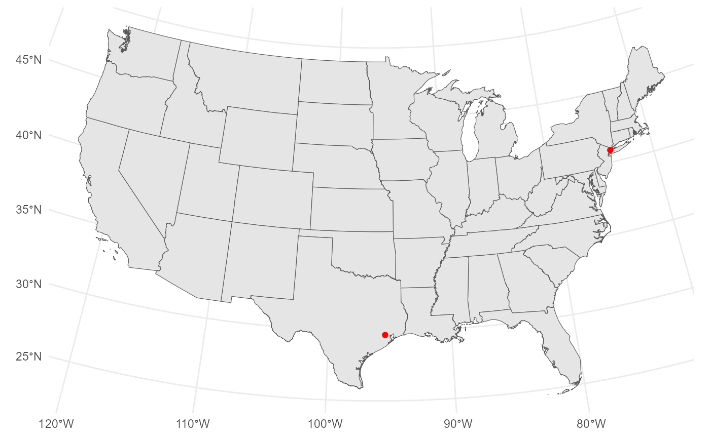
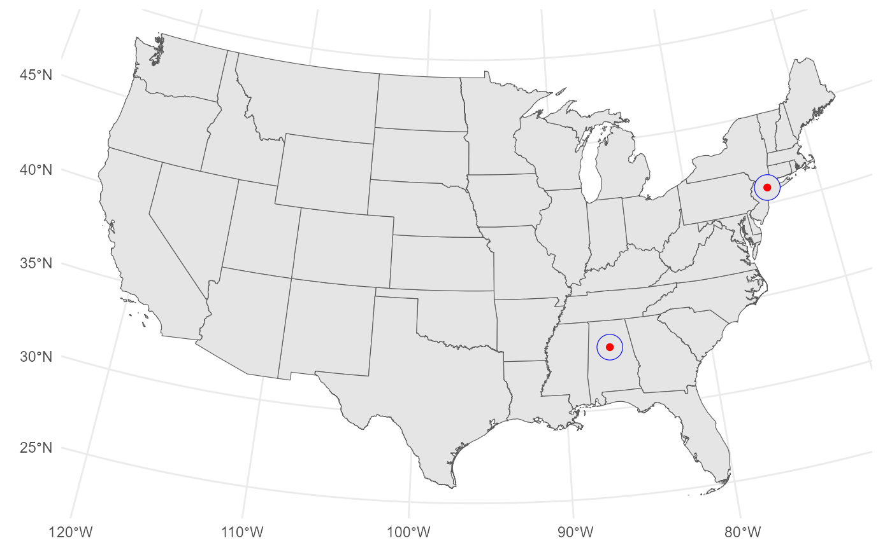
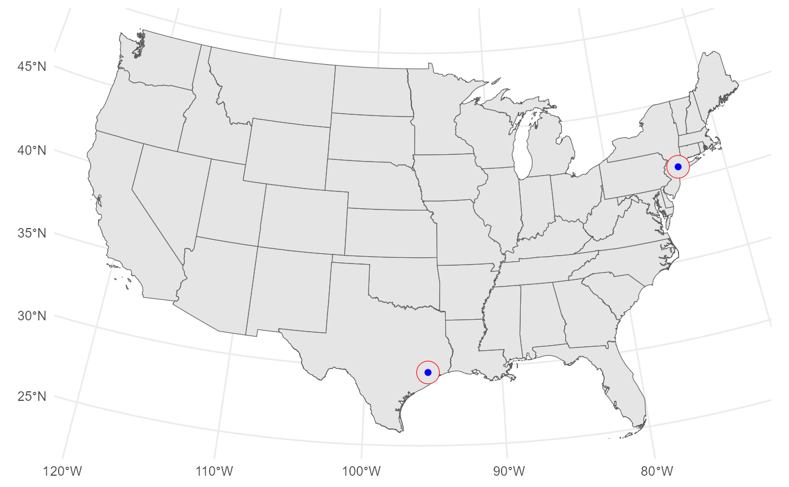

Calculating geographic coverage gain
Source:vignettes/geographic-coverage-gain.Rmd
geographic-coverage-gain.RmdIntroduction
Geography matters greatly in solid organ transplantation. Donor and
recipient practices vary greatly by region, and distance-related
barriers can magnify geographic disparities. In this vignette, we
demonstrate how the calculate_geography_coverage_gain()
function can be used to estimate the number of people living with HIV
(PLWH) who gain access to heart transplant centers, defined as residence
within a 50-mile radius.
library(sRtr)
library(CDCAtlas)
library(tidyverse)
#> Warning: package 'tidyr' was built under R version 4.3.3
#> Warning: package 'readr' was built under R version 4.3.3
#> Warning: package 'dplyr' was built under R version 4.3.3
library(sf)
#> Warning: package 'sf' was built under R version 4.3.3
library(tidycensus)
library(tigris)
library(ggplot2)Create geography objects
We begin by using the get_hrsa_transplant_centers()
function from the sRtr package to create an sf
object containing heart transplant centers not in PR or HI. We
subsequently perform a substantial amount of data cleaning
Transplant_centers_all_sf<-sRtr::get_hrsa_transplant_centers()%>%
filter(OPO_STATE_ABBR != "PR" & OPO_STATE_ABBR!= "HI")%>%
select(OTC_NM, OTC_CD, Service_Lst, X, Y) %>%
filter(str_detect(Service_Lst, str_to_sentence("Heart")))%>%
select(-Service_Lst)%>%
distinct()%>%
rename(OTCName=OTC_NM, OTCCode=OTC_CD, Latitude=Y, Longitude=X)%>%
st_transform(5070) We use the tigris package to import a map of states
state_geography <- tigris::states(
year = 2022,
cb = TRUE,
class = "sf")%>%
filter(!STUSPS %in% c("AK", "HI", "PR", "GU", "VI", "MP", "AS")) %>%
st_transform(5070)
#> | | | 0% | | | 1% | |= | 1% | |= | 2% | |== | 3% | |== | 4% | |=== | 4% | |=== | 5% | |==== | 5% | |==== | 6% | |===== | 6% | |===== | 7% | |===== | 8% | |====== | 8% | |====== | 9% | |======= | 10% | |======== | 11% | |======== | 12% | |========= | 12% | |========= | 13% | |========== | 14% | |========== | 15% | |=========== | 15% | |=========== | 16% | |============ | 17% | |============ | 18% | |============= | 18% | |============= | 19% | |============== | 20% | |=============== | 21% | |=============== | 22% | |================ | 22% | |================ | 23% | |================= | 24% | |================= | 25% | |================== | 25% | |================== | 26% | |=================== | 27% | |==================== | 28% | |===================== | 29% | |===================== | 30% | |====================== | 31% | |====================== | 32% | |======================= | 32% | |======================= | 33% | |======================== | 34% | |======================== | 35% | |========================= | 35% | |========================= | 36% | |========================== | 37% | |========================== | 38% | |=========================== | 38% | |=========================== | 39% | |============================ | 40% | |============================ | 41% | |============================= | 41% | |============================= | 42% | |============================== | 42% | |============================== | 43% | |=============================== | 44% | |=============================== | 45% | |================================ | 45% | |================================ | 46% | |================================= | 47% | |================================= | 48% | |================================== | 48% | |================================== | 49% | |=================================== | 50% | |==================================== | 51% | |==================================== | 52% | |===================================== | 52% | |===================================== | 53% | |====================================== | 54% | |====================================== | 55% | |======================================= | 55% | |======================================= | 56% | |======================================== | 57% | |========================================= | 58% | |========================================= | 59% | |========================================== | 59% | |========================================== | 60% | |=========================================== | 61% | |=========================================== | 62% | |============================================ | 63% | |============================================ | 64% | |============================================= | 64% | |============================================= | 65% | |============================================== | 65% | |============================================== | 66% | |=============================================== | 67% | |=============================================== | 68% | |================================================ | 68% | |================================================ | 69% | |================================================= | 70% | |================================================== | 71% | |================================================== | 72% | |=================================================== | 72% | |=================================================== | 73% | |==================================================== | 74% | |==================================================== | 75% | |===================================================== | 75% | |===================================================== | 76% | |====================================================== | 77% | |====================================================== | 78% | |======================================================= | 78% | |======================================================= | 79% | |======================================================== | 79% | |======================================================== | 80% | |========================================================= | 81% | |========================================================= | 82% | |========================================================== | 82% | |========================================================== | 83% | |=========================================================== | 84% | |=========================================================== | 85% | |============================================================ | 85% | |============================================================ | 86% | |============================================================= | 87% | |============================================================== | 88% | |============================================================== | 89% | |=============================================================== | 89% | |=============================================================== | 90% | |================================================================ | 91% | |================================================================ | 92% | |================================================================= | 92% | |================================================================= | 93% | |================================================================== | 94% | |================================================================== | 95% | |=================================================================== | 95% | |=================================================================== | 96% | |==================================================================== | 97% | |==================================================================== | 98% | |===================================================================== | 98% | |===================================================================== | 99% | |======================================================================| 100%We use ggplot to plot the centers on a map of the United States:
ggplot()+
geom_sf(data=state_geography)+
geom_sf(data = Transplant_centers_all_sf)+
theme_minimal()
Define existing centers and additional centers
For the purposes of this analysis, we assume baseline coverage with two centers, ALUA (University of Alabama-Birmingham) and NYMA (Montefiore Medical Center).
existing_centers<-Transplant_centers_all_sf%>%
filter(OTCCode %in% c("ALUA", "NYMA"))
ggplot()+
geom_sf(data=state_geography)+
geom_sf(data = existing_centers, color="red")+
theme_minimal()
We study the additional coverage for PLWH to add NYCP (Columbia-Presbyterian) and TXHI (Texas Heart Institute at Baylor St. Luke’s Medical Center in Houston, TX).
new_centers<-Transplant_centers_all_sf%>%
filter(OTCCode %in% c("NYCP", "TXHI"))
ggplot()+
geom_sf(data=state_geography)+
geom_sf(data = new_centers, color="red")+
theme_minimal()
We now create 50-mile buffers (80467.2 meters) around the transplant centers in the previous objects
Transplant_centers_all_buffer<-st_buffer(Transplant_centers_all_sf,
dist =80467.2)
existing_centers_buffer<-st_buffer(existing_centers,
dist =80467.2)
ggplot()+
geom_sf(data=state_geography)+
geom_sf(data = existing_centers_buffer, color="blue")+
geom_sf(data = existing_centers, color="red")+
theme_minimal()
new_centers_buffer<-st_buffer(new_centers,
dist =80467.2)
ggplot()+
geom_sf(data=state_geography)+
geom_sf(data = new_centers_buffer, color="red")+
geom_sf(data = new_centers, color="blue")+
theme_minimal()
Importing HIV data
we use the CDCAtlas package to import extrapolated
estimates of the census tract-level population of PLWH, merging with
tract geography obtained via the tigris package
hiv_tract_data<-CDCAtlas::get_atlas(
disease = "hiv",
year = 2022,
geography = "county",
extrapolate_to_tract = TRUE
)%>%
filter(indicator=="HIV prevalence")
#> Joining with `by = join_by(label, concept)`
#> Getting data from the 2018-2022 5-year ACS
#> Fetching tract data by state and combining the result.
#> Joining with `by = join_by(variable)`
#> Getting data from the 2018-2022 5-year ACS
#> Joining with `by = join_by(variable)`
tract_geography <- tigris::tracts(
year = 2022,
cb = TRUE,
class = "sf"
) %>%
select(
tract_fips = GEOID,
geometry
) %>%
st_transform(5070)
#> Retrieving Census tracts for the entire United States
#> | | | 0% | | | 1% | |= | 1% | |= | 2% | |== | 2% | |== | 3% | |== | 4% | |=== | 4% | |=== | 5% | |==== | 5% | |==== | 6% | |===== | 6% | |===== | 7% | |===== | 8% | |====== | 8% | |====== | 9% | |======= | 9% | |======= | 10% | |======= | 11% | |======== | 11% | |======== | 12% | |========= | 12% | |========= | 13% | |========= | 14% | |========== | 14% | |========== | 15% | |=========== | 15% | |=========== | 16% | |============ | 16% | |============ | 17% | |============ | 18% | |============= | 18% | |============= | 19% | |============== | 19% | |============== | 20% | |============== | 21% | |=============== | 21% | |=============== | 22% | |================ | 22% | |================ | 23% | |================ | 24% | |================= | 24% | |================= | 25% | |================== | 25% | |================== | 26% | |=================== | 26% | |=================== | 27% | |=================== | 28% | |==================== | 28% | |==================== | 29% | |===================== | 29% | |===================== | 30% | |===================== | 31% | |====================== | 31% | |====================== | 32% | |======================= | 32% | |======================= | 33% | |======================= | 34% | |======================== | 34% | |======================== | 35% | |========================= | 35% | |========================= | 36% | |========================== | 36% | |========================== | 37% | |========================== | 38% | |=========================== | 38% | |=========================== | 39% | |============================ | 39% | |============================ | 40% | |============================ | 41% | |============================= | 41% | |============================= | 42% | |============================== | 42% | |============================== | 43% | |============================== | 44% | |=============================== | 44% | |=============================== | 45% | |================================ | 45% | |================================ | 46% | |================================= | 46% | |================================= | 47% | |================================= | 48% | |================================== | 48% | |================================== | 49% | |=================================== | 49% | |=================================== | 50% | |=================================== | 51% | |==================================== | 51% | |==================================== | 52% | |===================================== | 52% | |===================================== | 53% | |===================================== | 54% | |====================================== | 54% | |====================================== | 55% | |======================================= | 55% | |======================================= | 56% | |======================================== | 56% | |======================================== | 57% | |======================================== | 58% | |========================================= | 58% | |========================================= | 59% | |========================================== | 59% | |========================================== | 60% | |========================================== | 61% | |=========================================== | 61% | |=========================================== | 62% | |============================================ | 62% | |============================================ | 63% | |============================================ | 64% | |============================================= | 64% | |============================================= | 65% | |============================================== | 65% | |============================================== | 66% | |=============================================== | 66% | |=============================================== | 67% | |=============================================== | 68% | |================================================ | 68% | |================================================ | 69% | |================================================= | 69% | |================================================= | 70% | |================================================= | 71% | |================================================== | 71% | |================================================== | 72% | |=================================================== | 72% | |=================================================== | 73% | |=================================================== | 74% | |==================================================== | 74% | |==================================================== | 75% | |===================================================== | 75% | |===================================================== | 76% | |====================================================== | 76% | |====================================================== | 77% | |====================================================== | 78% | |======================================================= | 78% | |======================================================= | 79% | |======================================================== | 79% | |======================================================== | 80% | |======================================================== | 81% | |========================================================= | 81% | |========================================================= | 82% | |========================================================== | 82% | |========================================================== | 83% | |========================================================== | 84% | |=========================================================== | 84% | |=========================================================== | 85% | |============================================================ | 85% | |============================================================ | 86% | |============================================================= | 86% | |============================================================= | 87% | |============================================================= | 88% | |============================================================== | 88% | |============================================================== | 89% | |=============================================================== | 89% | |=============================================================== | 90% | |=============================================================== | 91% | |================================================================ | 91% | |================================================================ | 92% | |================================================================= | 92% | |================================================================= | 93% | |================================================================= | 94% | |================================================================== | 94% | |================================================================== | 95% | |=================================================================== | 95% | |=================================================================== | 96% | |==================================================================== | 96% | |==================================================================== | 97% | |==================================================================== | 98% | |===================================================================== | 98% | |===================================================================== | 99% | |======================================================================| 99% | |======================================================================| 100%
hiv_tract_sf <- tract_geography %>%
left_join(
hiv_tract_data,
by = "tract_fips"
)Estimating additional coverage gain
We finally use the calculate_geography_coverage_gain
function to estimate the number of PLWH who would gain geographic
proximity to a transplant center given the additional centers.
calculate_geography_coverage_gain(
existing_areas=existing_centers_buffer,
added_areas=new_centers_buffer,
population_geography=hiv_tract_sf,
coverage_vars="tract_cases",
geography_id = NULL,
method = "intersection",
crs = 5070,
output = "wide"
)
#> # A tibble: 1 × 10
#> coverage_var total existing_covered added_covered newly_covered
#> <chr> <dbl> <dbl> <dbl> <dbl>
#> 1 tract_cases 1099805 142598. 171835. 35318.
#> # ℹ 5 more variables: combined_covered <dbl>, pct_existing_covered <dbl>,
#> # pct_added_covered <dbl>, pct_newly_covered <dbl>,
#> # pct_combined_covered <dbl>We see that the additional two centers lead to an improvement from
142,598 PLWH to 177,917, a gain of 35318. The total number of PLWH in
the hiv_tract_sf object is 1,099,805.